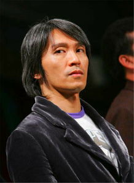
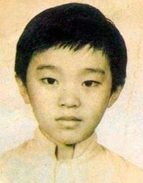
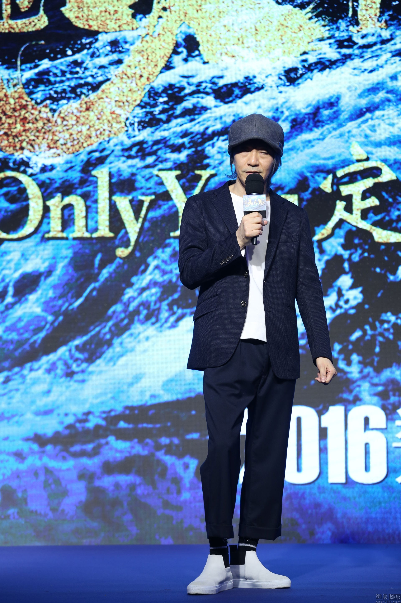
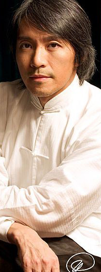
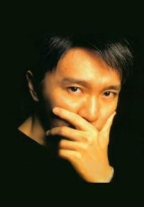
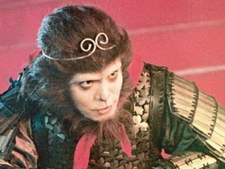
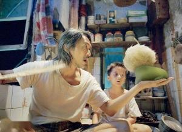
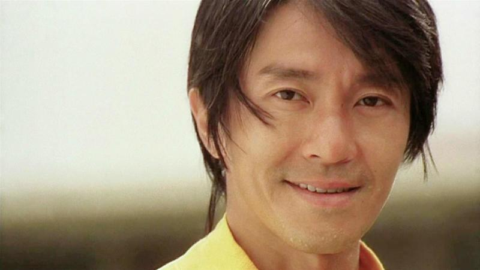

喜剧之王-周星驰
-
简介
周星驰（Stephen Chow，别名：星爷，1962年6月22日-），出生于中国香港，中国香港男演员、导演，国家一级演员。1980年成为丽的电视台的特约演员，开始进入演艺圈。1988年，出演电影《霹雳先锋》，凭借该片获第25届台湾电影金马奖最佳男配角奖。1990年，出演《赌圣》而广受关注。其后出演过《少林足球》《功夫》等作品，也获得过香港电影金像奖最佳导演奖、最佳男主角、最佳编剧，台湾电影金马奖最佳男配角等奖项。2016年执导《美人鱼》，创下中国内地电影票房新纪录。
个人经历
-
早年经历
1962年6月22日，周星驰出生在香港九龙的穷人区，父亲是浙江宁波人，母亲凌宝儿是广东宝安县人，他的名字是母亲起的，出自《滕王阁序》：“雄州雾列，俊采星驰，台隍枕夷夏之交，宾主尽东南之美。”
1969年，在周星驰7岁的时候，他的父母正式离异。于是，周星驰和姐姐周文姬、妹妹周星霞一起在母亲凌宝儿的抚养下成长。周星驰在学校成绩并不好，偏科，除了语文，其它科目成绩都不怎样，老师称赞周星驰画画不错。周星驰中学就读于香港圣玛利奥英文书院。在中学毕业以后，他做过两个月的办公室助理。

儿童时期周星驰 -
演艺经历-电视剧时代
1980年，周星驰成为丽的电视台的特约演员，从而进入演艺圈[7]。1981年，出演个人首部电视剧《IQ成熟时》。1982年，周星驰报考了第11期无线电视艺员训练班，但是没有考上；同年，他在戚美珍的介绍下进入第11期无线电视艺员训练班夜训班学习[7]。
1983年，无线电视艺员训练班后，周星驰正式成为无线电视台的签约艺员；同年，他开始担任儿童节目《430穿梭机》的主持人，并在节目中与拍档龙炳基共同主演单元剧《黑白僵尸》[8]；此外，他还参演了时装剧《北斗双雄》，在剧中扮演一个问题少年[9]。
1986年，周星驰被调入无线电视台戏剧组；同年，他首次担任男主角，在单元情景剧《哥哥的女友》中饰演可爱活泼又略带羞涩的潘家伟[10]；7月，与温兆伦、郭晋安共同出演时装喜剧《城市故事》。1987年，参演爱情剧《生命之旅》，在剧中饰演头脑简单、爱被吹捧，但用情专一、事父至孝的赵子龙[11]。

年轻时期周星驰 -
演艺经历-电影时代
1988年，与万梓良、李美凤共同出演动作片《捕风汉子》，并在片中沿袭了传统香港狭义电影的表演风格；其后周星驰得到李修贤的赏识，在电影《霹雳先锋》中饰演一个浪荡江湖的小弟，并凭借该片获得第25届台湾电影金马奖最佳男配角奖以及第8届香港电影金像奖最佳配角奖提名[12][13]；4月，与郑少秋、汪明荃共同出演时装剧《大都会》，在剧中饰演与郑世昌狼狈为奸、无恶不作的反派人物郑立基[14]；此外，他还主演了时装喜剧《斗气一族》，在剧中饰演能说会道的市井小青年邓发[15]。
1989年9月，搭档李连杰主演动作片《龙在天涯》，在片中饰演外表大大咧咧，但心思极为缜密的阿友；同年，在动作片《义胆群英》中饰演冲动愚忠的黑帮小弟小齐[16]；11月，出演时装商战剧《他来自江湖》，在剧中饰演说话古怪、思维异类的何鑫淼[17]。
1990年3月，主演喜剧片《一本漫画闯天涯》，并由此确立无厘头的表演风格[18]；7月，主演时装喜剧《孖仔孖心肝》，该剧也成为周星驰主演的最后一部电视剧；8月，在动作喜剧片《赌圣》中饰演一个修成正果的江湖混混；该片在香港地区的票房达到4132万港元，不仅获得香港年度票房排行榜冠军，还打破了香港地区票房纪录，周星驰也凭借该片获得第10届香港电影金像奖最佳男主角奖提名[19][20]；同年，主演喜剧片《赌侠》，在片中饰演靠特异功能在赌博中赚钱的周阿星；该片在香港地区的最终票房达到4034万港元，位列香港年度票房排行榜第二名[21]。
1991年2月，在爱情喜剧片《整蛊专家》中饰演手法独特的整人专家古晶；该片是周星驰无厘头风格的代表作品之一，在香港上映后最终票房为3136万港元[22]；7月，在喜剧片《逃学威龙》中改变小混混的银幕形象，饰演身怀绝技的卧底神探周星星[23]；该片在香港地区上映后以4382万港元的票房成绩获得香港年度票房冠军，并打破香港地区的票房纪录[24][21]；8月，主演喜剧科幻片《赌侠2上海滩赌圣》，该片在香港的最终票房达到3186万港元[25]；同年，周星驰与成龙、周润发并称为“双周一成”[26]。
1992年1月，主演的喜剧片《家有喜事》在香港上映后最终票房为4899万港元，位列香港年度票房排行榜第二名[21]；4月，出演《逃学威龙》系列电影的第二部《逃学威龙2》；7月，在古装喜剧片《审死官》中饰演聪明机智的状师宋世杰；该片以4988万港元的票房成绩打破香港地区的票房纪录，并获得香港电影年度票房冠军[19]；周星驰亦凭借该片获得第37届亚太电影节最佳男主角奖；9月，与林青霞、李嘉欣共同主演武侠喜剧片《鹿鼎记Ⅱ：神龙教》，在片中饰演投机钻营、见风使舵的韦小宝；该片在香港地区的最终票房达到3658万港元；12月，在古装片《武状元苏乞儿》中饰演因受人陷害而沦为乞丐的苏灿，这也是他首度出演悲喜剧[27]；而在1992年香港年度票房排行榜中，排名前五名的电影均为周星驰主演的作品[28]。
1993年1月，出演喜剧片《逃学威龙3：龙过鸡年》；7月，与巩俐、郑佩佩共同主演古装喜剧片《唐伯虎点秋香》，在片中饰演天资聪慧的江南四大才子之首唐伯虎[29]；该片在香港地区的票房达到4017万港元，位列香港年度票房排行榜榜首[19]；7月，主演武侠喜剧片《济公》，在片中扮演一位学问渊博、行善积德的得道高僧；同年，凭借古装喜剧片《审死官》获得第12届香港电影金像奖最佳男主角奖提名[30]。
周星驰 
周星驰 
周星驰 -
演艺经历-自导自演时代
1994年，推出首部自编自导自演的电影《国产凌凌漆》；该片在香港上映以后取得3752万港元的票房成绩；位列香港年度票房排行榜第三位[21]；周星驰亦凭借该片获得第14届香港电影金像奖最佳男主角奖提名[31]；同年，自导自演喜剧动作片《破坏之王》 ，在片中饰演体弱多病、懦弱怕事的何金银；此外，他还出演了古装喜剧片《九品芝麻官之白面包青天》[32]。
1995年1月，在喜剧片《大话西游之月光宝盒》中饰演性格不羁、敢爱敢恨的至尊宝[33]；2月，主演《大话西游》系列电影的下部《大话西游之大圣娶亲》，并在片中演绎了一段与紫霞仙子的爱情故事；《大话西游》是周星驰的转型之作，尽管该系列电影在票房上没有达到投资方的预期，但是经过VCD等媒介的传播以后逐步在中国内地引起关注，成为周星驰后现代风格的代表作之一[34][35]；同年，主演科幻喜剧片《百变星君》，在片中饰演学业无成，却挥金如土的富豪之子李泽星[36]；该片上映以后以3533万港元的票房位列香港年度票房排行榜第三位[21]。
1996年2月，自导自演科幻喜剧片《大内密探零零发》；周星驰在片中延续其无厘头电影风格的同时，也将各种不同类型片的电影元素融合在一起[37]；该片上映以后以3605万港元的票房位列香港年度票房排行榜第三位[21]；12月，自导自演喜剧动作片《食神》，并在片中饰演幽默风趣、口才过人的史蒂芬·周；该片在香港地区的最终票房达到4086万港币，位列香港年度票房排行榜第二位[21]；此外，该片还被评选为威尼斯国际电影节的观摩影片[38]；同年，凭借喜剧片《大话西游之大圣娶亲》获得第1届香港电影金紫荆奖最佳男主角奖以及第15届香港电影金像奖最佳男主角奖提名[39]。
1997年，主演喜剧片《97家有喜事》，在片中饰演个性反叛、不修边幅的老恭；该片在香港地区以4044万港元的票房获得香港年度票房亚军[21]；同年，与莫文蔚、葛民辉共同主演喜剧片《算死草》。1998年，在贺岁片《行运一条龙》中饰演总是占朋友便宜的何金水；该片以2773万港元的票房成绩位列香港年度票房排行榜第三位[6]。
1999年，周星驰自导自演了带有自传性质的喜剧片《喜剧之王》；他在片中饰演坚持梦想的群众演员尹天仇，并在表演上回归到了卓别林式的喜剧风格[40]；该片在香港上映以后最终票房达到2984万港元，并获得香港年度票房冠军[19]；同年，与张家辉、吴君如合作主演喜剧片《千王之王2000》，在片中饰演赌术精湛的千王之王黄师虎[41]。 2001年，自导自演喜剧片《少林足球》，在片中饰演具有足球天赋的五师兄；该片在香港地区的最终票房达到6073万港币，不仅获得香港年度票房冠军，还打破了香港地区票房纪录[42][43]。2002年，他凭借《少林足球》获得第21届香港电影金像最佳导演奖、最佳男主角奖以及杰出青年导演奖，而该片亦获得第21届香港电影金像最佳电影奖、日本电影蓝丝带奖最佳外语片等奖项，并被美国《时代周刊》选为“世界史上25部最佳体育电影之一”[44][45][46]。
2003年，成为美国《时代周刊》的封面人物，并入选该杂志评出的“29位亚洲英雄”[47][48]。2004年，在喜剧动作片《功夫》中担任导演、编剧兼主演；该片上映以后在全球的总票房达1.05亿美元，在香港以6127万港元的票房成绩打破香港地区的票房纪录；并创下华语电影在北美上映的单厅票房纪录[49]；该片不仅被《时代周刊》评选为“年度十大佳片”之一，亦获得第24届香港电影金像奖最佳影片奖、第42届台湾电影金马奖最佳剧情片奖、第63届美国金球奖最佳外语片提名等奖项[50][51]；周星驰个人则获得第42届台湾电影金马奖最佳导演奖[50]。
2005年，在中国电影表演艺术学会举办的评选活动中，周星驰被选为“中国电影百年百位优秀演员”之一[52]。2008年，自导自演科幻题材的电影《长江7号》；他在维持喜剧风格的同时也在片中融入了写实主义的风格；该片在香港上映以后以5140万港元的票房成绩获得香港电影年度票房冠军[6]；在中国内地则收获了2.03亿元的累积总票房[53]。
周星驰 
周星驰 
周星驰
人物评价
周星驰是华语影坛的标志性人物之一[110]，被誉为中国的查理·卓别林[111]。20世纪90年代，由于他主演的电影屡破票房纪录，因此他与成龙、周润发并称为“双周一成”，意为香港电影的票房保证[112]。他不仅在商业电影方面取得了很高的成就，而且还制造了具有独特风格的无厘头式喜剧，更缔造了“周星驰现象”。作为无厘头文化的代言人，其电影风格已经成为很多导演的样本[113]。周星驰的文化影响力不止于电影领域，他的很多台词都成为一代人的经典口头禅[113]。
周星驰既是传统喜剧的继承者，也是开拓者[114]。他通过表面毫无逻辑关联的语言和肢体动作来表现人物在矛盾冲突中的行为方式，从而形成无厘头的表演方式。电影《赌圣》让观众第一次感受到他充满想象力的喜剧理念[115]；而《大话西游》更让他的表演风格深入人心。周星驰从来没有重复自己[116]，其喜剧风格也经历了从夸张到内敛，从搞笑到温清，从肢体语言的表现到进入人物内心的转变过程[117]。他以喜剧的叙事形式来表现悲剧性的主题意蕴，在给人们带来欢笑的同时，也能引起观众的反思。在转型当导演后，他的才能得到了更大的释放[117]。从《国产凌凌漆》中的黑色幽默，到《食神》中倾注他对人生的思考，再到《少林足球》中的特效使用，他经历了从电影思想到电影技术的全方位打磨。而从《功夫》开始，他的导演风格不仅更加纯熟，而且越来越擅长将不同风格的电影元素糅杂到一起[116]。
周星驰在现实生活中不仅性格内向[118]，而且为人低调，完全不在乎世人对他的态度[119]。虽然他不善言辞，对外面的世事比较陌生[120]；但是他也是一个内心情感很丰富的人，只是这种情感不容易表达出来[121][122]。他是一位很细心的绅士，而且很会照顾人[123][124]。
周星驰
经典台词
曾经痛苦，才知道真正的痛苦。曾经执著，才能放下执著。曾经牵挂，才能了无牵挂
我很孤独，用英语怎么说？I love you。
我觉得我现在很漂亮，我也很喜欢我现在这个样子，你要是不喜欢看，你可以走开
美好的爱情就是一个臭不要脸一个假装矜持，千万不要等到臭不要脸的那个走了，假装矜持的那个才哭了
做人如果没梦想，那跟咸鱼有什么分别啊？
曾经有一份真诚的爱情摆在我的面前，我没有珍惜，等到失去的时候才追悔莫及，人世间最痛苦的事情莫过于此。如果上天能够给我一个重新来过的机会，我会对那个女孩子说三个字：“我爱你”。如果非要给这份爱加上一个期限，我希望是，一万年。——《大话西游》
曾经痛苦，才知道真正的痛苦；曾经执着，才能放下执着；曾经牵挂，才能了无牵挂。——《西游降魔篇》
我们虽然穷，但是不能说谎，也不能打人，不是我们的东西，我们不能拿，要好好读书，长大要做个对社会有用的人。”——《长江7号》
我一直在骗你你知道吗？骗就骗吧，就像飞蛾一样，明知道要受伤，还是会扑到火上，飞蛾就那么傻！“——《大话西游之大圣娶亲》
戴上紧箍我就无法爱你，放下紧箍我就无法救你。——《大话西游》
只要你说我行，就算全天下的人都说我不行，我也不在乎！——《大内密探零零发》
金箍戴上之后，你再也不是个凡人，人世间的情欲再也不能沾半点，如果动心，这个金箍就会在你头上越收越紧，苦不堪言。在戴上这个金箍之前，你还有什么话想说？——《大话西游》
可惜快乐永远都是短暂的，换来的只是无穷无尽的痛苦和长叹。——《大话西游》
美好的爱情就是一个臭不要脸一个假装矜持，千万不要等到臭不要脸的那个走了，假装矜持的那个才哭了。——《西游·降魔篇》
前面漆黑一片，什么也看不到。 也不是，天亮后会很美的。——《喜剧之王》
有时候你发现你爱上一个你讨厌的人，这段感情才是最要命的。——《大话西游》
不记得了也好，忘却也是一种幸福。——《功夫》
“那个人样子好怪。” “我也看到了，他好像一条狗哎。”——《大话西游》
曾经痛苦，才知道真正的痛苦；曾经执著，才能放下执著；曾经牵挂，才能了无牵挂。——《西游·降魔篇》